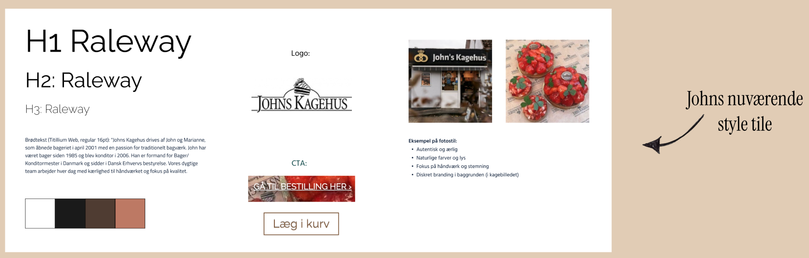
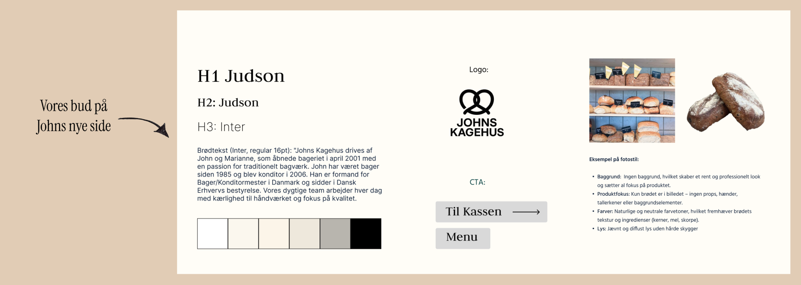
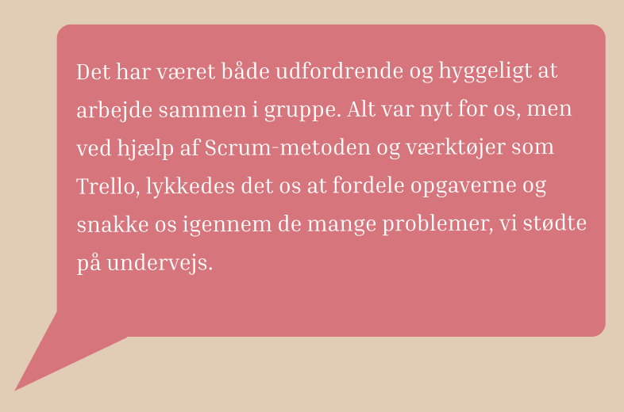

05.02: REDESIGN AF EN VIRKSOMHEDSSITE
Den sidste del af Tema 5 bestod af gruppearbejde og et redesign af en virksomhedshjemmeside. For første gang fik vi mulighed for at samle alle de elementer, vi har lært gennem første semester, og anvende dem i en reel kontekst ved at arbejde med en eksisterende virksomhed.
Min gruppe valgte at arbejde med bageriet Johns Kagehus, da deres hjemmeside trængte til en ny og mere brugervenlig tilgang. Hjemmesiden havde alt for mange unødvendige knapper og mange billeder, som enten ikke passede sammen visuelt eller var for pixelerede til at være behagelige at se på. Vi blev hurtigt enige om, at redesignets fokus skulle være enkelhed og visuel ro.
For at underbygge vores tanker om det nuværende design og vores forslag til forbedringer, anvendte vi igen empirisk data som grundlag for beslutningerne. Vi startede med likert-tests, hvor vi først viste billeder af den nuværende hjemmeside og virksomhedens nuværende style tile, og derefter viste vi vores eget bud på en ny style tile.
Vores idé var at forenkle siden, sætte fokus på billeder af bagværket og samtidig give hjemmesiden et mere moderne og indbydende udtryk. Ud fra testresultaterne kunne vi konstatere, at den nuværende hjemmeside blev opfattet som gammeldags, rodet og uindbydende, mens vores version blev vurderet som enkel og behagelig at se på.
Tanker omkring gruppearbejde?
Se mit projekt her!: Johns Kagehus